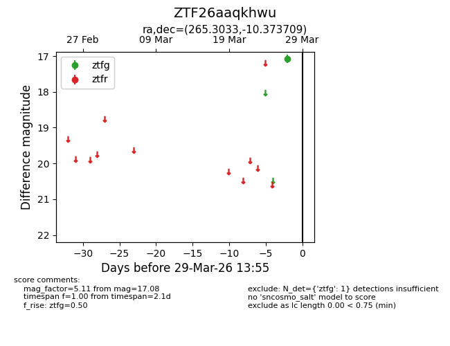
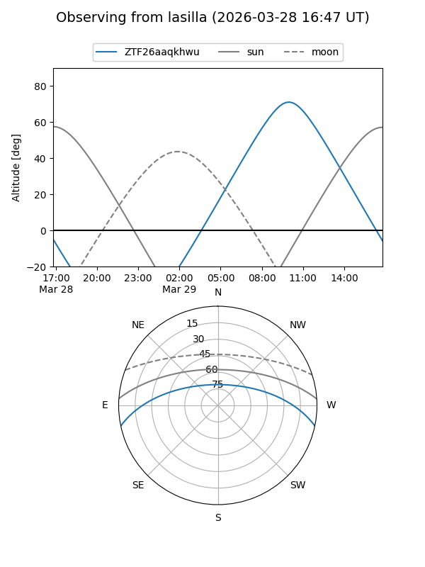
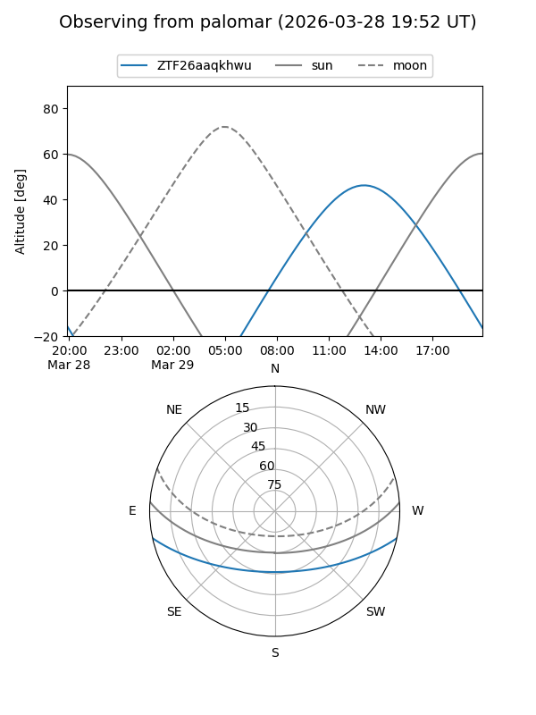

ZTF26aaqkhwu
Target ZTF26aaqkhwu at 2026-03-29 13:58
Aliases and brokers:
FINK: link
Lasair: link
ALeRCE: link
alt names
ZTF26aaqkhwu (ztf,fink_ztf)
Coordinates:
equatorial (ra, dec) = 265.3033,-10.37371
equatorial (HMS+DMS) = 17:41:12.80,-10:22:25.35
galactic (l, b) = (15.4400,+10.48394)
Flags:
Photometry:
last ztfg=17.08
1 ztfg detections
Lightcurve

Visibility


Additional plots